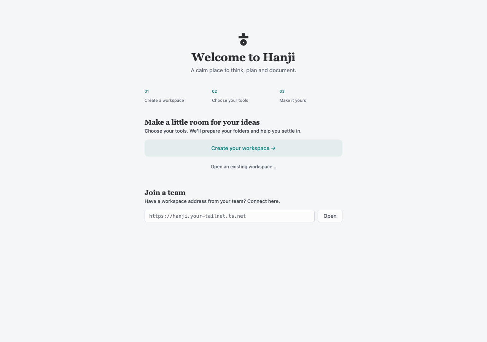

Hanji
HanjiDesktop workspace
Hanji brings Think, Plan and Document into one Mac workspace. The current desktop preview is shared by invitation; public binary downloads are not available yet. Request access and read the setup guide. The app includes its runtime, so a preview recipient does not need to install Node, pnpm or a coding agent to use the basic tools.
Install and open
Unzip the preview you received and read Start here.html. Move Hanji.app to Applications, then open it there. Use the build shared for your Mac. Signing and notarization depend on that build. If macOS cannot verify it, confirm its source with the person sharing it and follow Apple’s guidance.

Choose Create your workspace. Existing workspaces can be opened from their data folder, and a team workspace can be opened using its supplied address. A team address requires the network and access its owner has configured; entering an address does not grant permissions.
Four short setup stages
- Your workspace. Give it a name and choose products. Think, Plan and Document begin selected. You can change the selection in Settings later.
- Your content. Start fresh lets Hanji prepare local folders for the selected products, including an editable welcome page in Document. Bring existing content asks only for the sources those products need.
- Secure access. Choose and confirm an owner password of at least eight characters. Keep it safe. This Mac signs you in automatically; the password protects owner access outside the desktop app.
- Review and begin. Check the workspace, content and access before creating. Edit links return to the relevant stage with in-memory choices preserved.

The name, product choices and fresh/import choice survive a reload in that tab. Passwords are never saved in the draft. Quick setup help opens inside the flow. A failed setup can be corrected or retried; newly created folders and mounts roll back before the owner account is stored. Existing files are preserved.
Move between products
The title bar switches between Think, Plan and Document. Activity and Settings are independent workspace views. The workspace menu opens another workspace or returns to the workspace list. A workspace may use one, two or all three products.
Shared search controls, sidebars, the primary color, appearance and the conductor follow the workspace. The products keep their own content and editing tools:
- Think canvas explores ideas with spatial objects and shared workshops.
- Objectives and key results connects goals to the issues in Plan.
- Reading and writing keeps knowledge in Markdown through Document.
- Workspace insights follows recorded work across all three.
Add an agent when you need one
The conductor uses your configured Claude or Codex setup. It does not include a model subscription, and ordinary reading, editing and canvas work do not require one. Agent access follows the workspace’s permissions and token scopes; requested approvals remain explicit. The conductor explains context, approval and Undo.
The implementation still uses identifiers such as write, work, tracker
and whiteboard in package names, commands, storage and URLs. Those are technical
identifiers for Document, Plan and Think; the product names above describe the UI.
For an existing source checkout or a server, use Install Hanji.